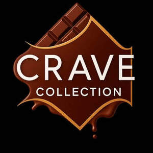

Trade Mark Journal No.2025/028 11 July 2025
UK00004215545 7 June 2025 (30)

- Class 30
- Chocolate; Chocolate candies; Chocolate truffles; Chocolate cake; Chocolate fudge; Chocolate brownies; Chocolate biscuits; Chocolate confectionery containing pralines; Chocolates; Chocolate confectionary; Chocolate confectionery; Chocolate bars; Chocolate sweets; Chocolate cakes; Deep chocolate cake made with chocolate sponge; Chocolate confections; Chocolate marzipan; Chocolate coffee; Chocolate coated marshmallow biscuits containing toffee; Chocolate coated biscuits; Milk chocolate bars; Chocolate wafers; Confectionery items coated with chocolate; Filled chocolate; Chocolate candy with fillings; Chocolate shells; Chocolate covered biscuits; Chocolate powder; Chocolate coated nougat bars; Pralines made of chocolate; Chocolate caramel wafers; Filled chocolate bars; Chocolates in the form of pralines; Shortbread with a chocolate coating; Chocolate for confectionery and bread; Chocolate chips; Chocolate pastries; Marshmallow filled chocolates; Chocolate fondue; Chocolate topping; Chocolate sauce; Milk chocolate; Chocolate topped pretzels; Chocolate bunnies; Chocolate covered wafer biscuits; Chocolate covered cakes; Chocolate flavoured confectionery; Chocolate for toppings; Shortbread part coated with chocolate; Chocolate creams; Chocolate eggs; Chocolate waffles; Shortbread with a chocolate flavoured coating; Chocolate vermicelli; Chocolate desserts; Milk chocolates; Hot chocolate; Milk chocolate teacakes; Chocolate confectionery having a praline flavour; Chocolate decorations for confectionery items; Chocolate syrup; Chocolate coated nuts; Chocolate covered pretzels; Chocolate coating; Liqueur chocolates; Chocolate decorations for cakes; Ice creams containing chocolate; Candy with cocoa; Half covered chocolate biscuits; Biscuits containing chocolate flavoured ingredients; Chocolates with mint flavoured centres; Chocolate confectionery products; Confectionery chocolate products; Chocolate pastes; Dairy-free chocolate; Substitutes (Chocolate -); Dairy chocolate; Chocolate sauces; Chocolate coated macadamia nuts; Drinks containing chocolate; Confectionery items formed from chocolate; Aerated drinks [with coffee, cocoa or chocolate base]; Mousses (Chocolate -); Chocolate mousses; Almonds covered in chocolate; Aerated chocolate; Chocolate flavourings; Aerated beverages [with coffee, cocoa or chocolate base]; Non-medicated chocolate confectionery; Ice creams flavoured with chocolate; Chocolate bark containing ground coffee beans; Filled chocolates; Chocolate extracts; Non-medicated confectionery containing chocolate; Chocolate beverages; Hot chocolate mixes; Waffles with a chocolate coating; Biscuits having a chocolate coating; Biscuits having a chocolate flavoured coating; Beverages with a chocolate base; Non-medicated flour confectionery containing chocolate; Beverages containing chocolate; Chocolate syrups; Chocolate beverages containing milk; Vegan hot chocolate; Imitation chocolate; Drinks flavoured with chocolate.
A-Z SUPERSTORE LTD